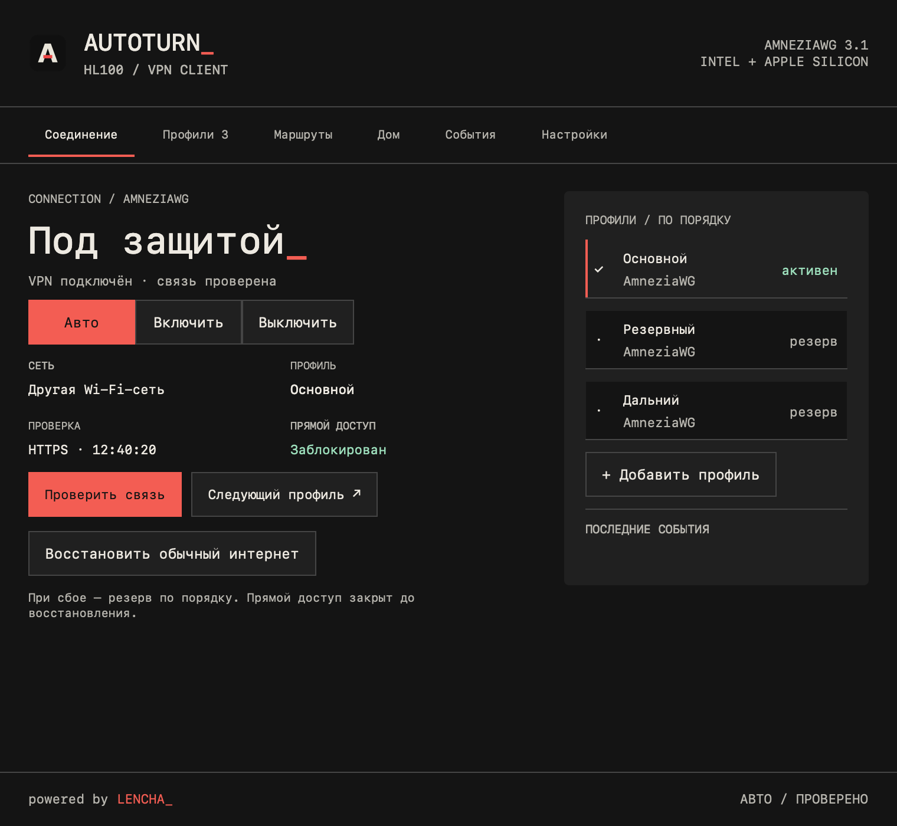

Дома — напрямую.
Вне дома — VPN_
AutoTurn переключает VPN по домашней Wi-Fi сети. Дома подключение идёт напрямую, вне дома — через твой AmneziaWG-профиль.
Intel + Apple Silicon · Без Rosetta · Нужен свой VPN-профиль

Подключение по ситуации.
Добавь домашние сети и включи «Авто». Когда нужно — переключи режим вручную, прямо из верхнего меню Mac.
Выбирай, что идёт через VPN.
Весь интернет или выбранные сервисы, домены и IP. В режиме по правилам остальные соединения идут напрямую.
Твои подключения в одном месте.
AmneziaWG 3.1, импорт .conf и резервные профили. Конфигурации хранятся в Связке ключей macOS.
Всё нужное.
Под рукой.
Нативный интерфейс для Mac.
Пульт, меню и маршруты — в твоём стиле.
Один экран.
Весь контроль.
Текущая сеть, активный профиль и режим подключения. Закрывай пульт — AutoTurn продолжит работать из верхнего меню.
Полная инструкция со скриншотами ↗Четыре шага.
И можно идти.
- 01
Установи AutoTurn
Скачай ZIP из GitHub Releases, распакуй и перенеси AutoTurn.app в «Программы».
- 02
Добавь свой профиль
Импортируй AmneziaWG .conf кнопкой или перетаскиванием. Профиль нужен от своего VPN-сервера или провайдера.
- 03
Установи VPN-службу
Нажми кнопку в пульте и подтверди системный запрос администратора.
- 04
Укажи домашние сети
Разреши чтение имени Wi-Fi через геолокацию macOS, добавь домашние сети и включи «Авто».
AutoTurn подписан ad hoc, без Developer ID и нотариализации. Если macOS блокирует запуск, разреши именно AutoTurn в «Системные настройки → Конфиденциальность и безопасность». Отключать защиту системы не нужно.
Знакомый AutoTurn.
Больше контроля.
Маршрутизация, каталог сервисов и импорт IP-списков уже доступны. В версии 1.0.2 улучшено восстановление сети после сна, повторное подключение VPN и очистка сетевых настроек при сбоях.
Что нового в релизе ↗- VPN для выбранных сервисов. Остальной интернет — напрямую.
- Каталог GeoAggregator, свои домены и IP. Импорт IP-списков, включая формат HydraRoute, и экспорт правил в JSON.
- Независимые темы пульта, верхнего меню и страницы маршрутов.
- Проверка обновлений каждый час. Одно уведомление на версию, установка — по твоему действию.
- Обновление сохраняет профили, домашние сети и маршруты.
Перед первым запуском.
На каких Mac работает?
Нужна macOS 13 или новее. Один ZIP содержит нативные версии для Intel и Apple Silicon, включая M1. Rosetta не требуется. Запуск компонентов проверяется в CI на обеих архитектурах.
Есть ли VPN-сервер в комплекте?
Нет. AutoTurn — клиент для твоего AmneziaWG-профиля. Для подключения нужен доступный VPN-сервер или готовый профиль от провайдера.
Как работают маршруты?
В режиме по правилам выбранные сервисы, домены и IP идут через VPN, остальные — напрямую. Каталог обновляется отдельно, свои правила сохраняются. Шифрованный DNS браузера и общие IP сервисов могут влиять на распознавание; при необходимости добавь IP-список или выбери полный туннель. IPv6-only внешние сети и IPv6 Endpoint пока не поддерживаются.
Что делать, если пропал интернет?
Используй кнопку «Восстановить обычный интернет» в пульте или верхнем меню и проверь результат. Режим «Выключить» возвращает прямое подключение. При недоступном туннеле выбранные VPN-направления остаются заблокированными.
Зачем разрешение геолокации?
macOS требует его для чтения имени Wi-Fi. AutoTurn использует название сети для домашнего режима; координаты не сохраняются и не отправляются.
Как обновить приложение?
AutoTurn проверяет GitHub раз в час. Можно нажать «Проверить обновления» вручную или открыть индикатор новой версии в пульте и меню. Установка начинается по твоему действию и сохраняет настройки; macOS запросит права администратора.
Где инструкция и помощь?
Инструкция со скриншотами объясняет настройку и режимы. Об ошибке можно написать в GitHub Issues.